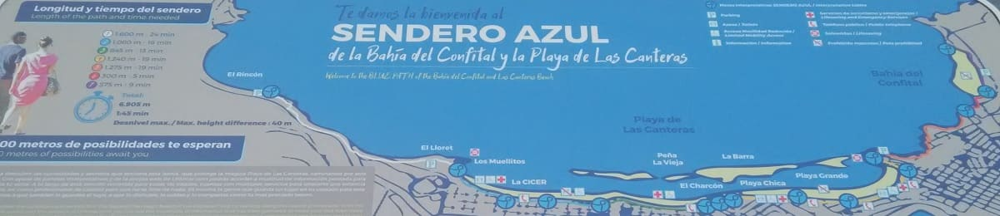

El 24 de Junio de 1478 un ejército comandado por el capitán Juan Rejón enviado por la Corona de Castilla instala un campamento militar junto a la desembocadura del barranco Guinigualda.
Ese campamento fue el origen de la que sería la primera ciudad fundada por la Corona en el Atlántico previo a la colonización de América.
La introducción de la caña de azucar desde América dio lugar a que las islas Canarias fueran epicentro de la industria azucarera en Europa. Esto se tradujo en que el campamento diera lugar a la ciudad de Las Palmas y que se iniciara su gran crecimiento.
 El barrio de Triana sería su eje y en lo que hoy es el parque de San Telmo se encontraría el puerto de Las Palmas.
El barrio de Triana sería su eje y en lo que hoy es el parque de San Telmo se encontraría el puerto de Las Palmas.
Las Palmas pues se limitaría a los barrios de Vegueta y Triana que como casi todas las ciudades castellanas costeras tuvieran una especial fortificación debido a los ataques de los piratas británicos.
A mitad del siglo XIX se inicia el nuevo puerto en su actual ubicación y se realiza una modernización de toda la ciudad que había quedado estancada durante decadas desde el declive de la industria azucarera.
A finales del siglo se ignagura el primer hotel, el Santa Catalina, hoy hotel de 5 estrellas en el centro de la ciudad.
Poco a poco irán surgiendo mñas hoteles y es a mitad del siglo XX con la construcción del aeropuerto cuando se erige como uno de los destinos turísticos más demandados a nivel nacional, comenzando una carrera hotelera por hacerse con las mejores zonas de la isla.
A partir de los años 80 el florecimiento del sur de Gran Canaria desplaza a la capital como primer destino turístico, sobre todo a nivel de playas, sin embargo el caracter arquitectonico de la isla y que la población esta concentrada en esta urbe no le hace perder población ni inversiones.
El servicio de guauguas es mejorado y modernizado y la mayoría de los monumentos y calles de la isla son restauradas y blindadas frente a los peligros del paso del tiempo. Se construyen multitud de edificios como el palacio de congresos, y se mejora el campus unviversitario.
En los últimos años ha existido un esfuerzo por mejorar la visión de la capital, integrando los barrios más conflictivos y adecentandolos con dinero para edificios y accion social como en el barrio de La Isleta y en el Polvorín asi como en La Minilla.
Además se ha invertido mucho en el arreglo del paseo y la playa de Las Canteras que junto al casco histórico son los dos motores turísticos de la capital.
La ciudad cuenta con edificios con diferentes arquitecturas pero el más marcado es el estilo colonial que luego sería llevado a sudamérica.
Edificios sencillos más basados en la funcionalidad que en la estética.
El monumento más importante es la catedral de Canarias que esta en el barrio del Vegueta. Barrio cerca de donde se encontraba el puerto de aquel entonces, que estaba en lo que hoy es el parque de San Telmo.
 Como iglesias importantes que se conservan esta la iglesia de San Jose y la iglesia de Santo Domingo de Guzman.
Cerca de la catedral se encuentran algunas iglesias que cuentan con siglos de antiguedad como la catedral, y del teatro pereque Galdos, edificio del siglo pasado que representa la cultura Canaria y donde se dan citas las mejores obras de España y también internacionales.
De la época de las incursiones de piratas ingleses y del comercio con sudamérica quedan algunos torreones o murallas como el Torreón de San Pedro Mártir, conocido como Castillo de San Cristóbal cuyo nombre da nombre al barrio.
En esos tiempos en una ocasión se llego a conquistar la isla pot psrte de la flota holandesa, y hubo un saqueo general de la catedral de Santa Ana asi como iglesias y casas privadas.
Como iglesias importantes que se conservan esta la iglesia de San Jose y la iglesia de Santo Domingo de Guzman.
Cerca de la catedral se encuentran algunas iglesias que cuentan con siglos de antiguedad como la catedral, y del teatro pereque Galdos, edificio del siglo pasado que representa la cultura Canaria y donde se dan citas las mejores obras de España y también internacionales.
De la época de las incursiones de piratas ingleses y del comercio con sudamérica quedan algunos torreones o murallas como el Torreón de San Pedro Mártir, conocido como Castillo de San Cristóbal cuyo nombre da nombre al barrio.
En esos tiempos en una ocasión se llego a conquistar la isla pot psrte de la flota holandesa, y hubo un saqueo general de la catedral de Santa Ana asi como iglesias y casas privadas.
Al retirarse de las islas provocarón un gran incendio en el cual muchos bienes culturales fueron perdidos para siempre, entre ellos retablos muy costosos en las iglesias y grandes obras de arte muchas de ellas hechas de oro o plata de la época.
Sin embargo a pesar de la fuerza del incendio el templo resistio gracias a los materiales con los que fue construido.
Es por ello que ha llegado a nuestros días.
Los barrios más antiguos pues son el de Vegueta y el de Triana, que conformaban la antigua ciudad de Las Palmas.
Entre los monumentos además de los religiosos sobresalen la casa de Colón y el museo arqueológico provincial.
Como edificios o palacios conservados el palacete Rodriguez Quegles o la casa Falcon y Quintana, ambos de un siglo XVIII tardío o de comienzos del XIX.


Las Palmas cuenta con 5 playas, la playa de San Cristobal, la Laja, el Confital, las Alcaravaneras y las Canteras. Ésta última es la playa más importante de la ciudad y una de las más visitadas de la isla. Se extiende por todo el norte de la capital teniendo más de 3 kilometros de extensión. Esta dividida en varios tramos como se muestra en la imagen inferior.

Con todo Las Palmas es una ciudad viva y dinámica de España y una con el mayor potencial de crecimiento. La calidad de vida es bastante alta debido a unos precios competitivos y a un consumo elevado debido a la cantidad de turistas que la visitan cada año. Además el número de fiestas, festivales y eventos es muy elevado, habiendo siempre alguna excusa para salir tanto de noche como de día.

© 2016 - All Rights Reserved - Diseñada por Sergio López Martínez
![[Valid RSS]](https://www.feedvalidator.org/images/valid-rss-rogers.png "Validate my RSS feed")